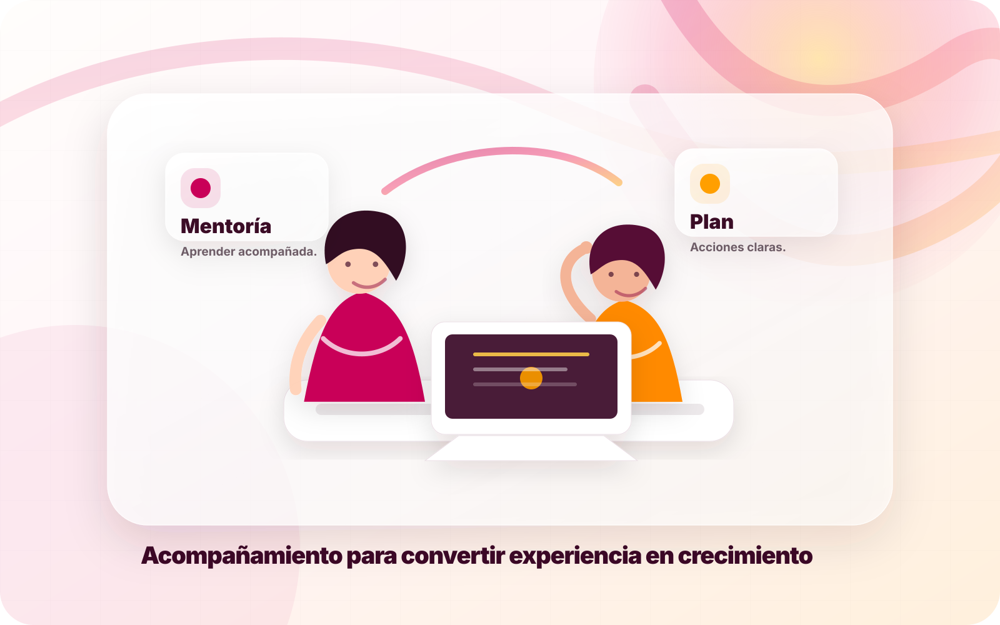
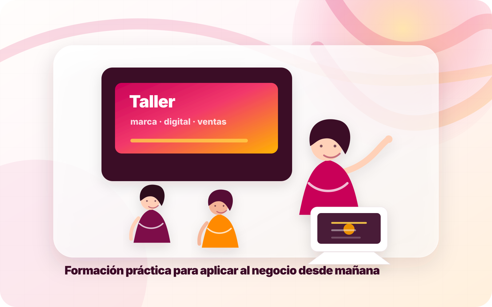
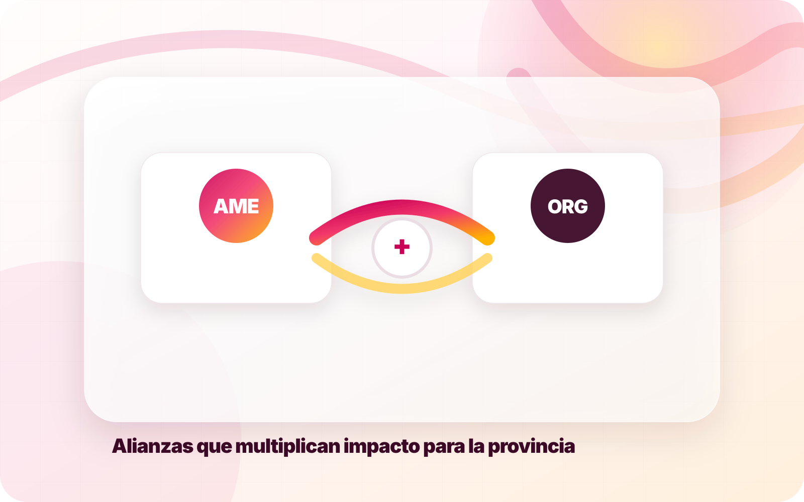
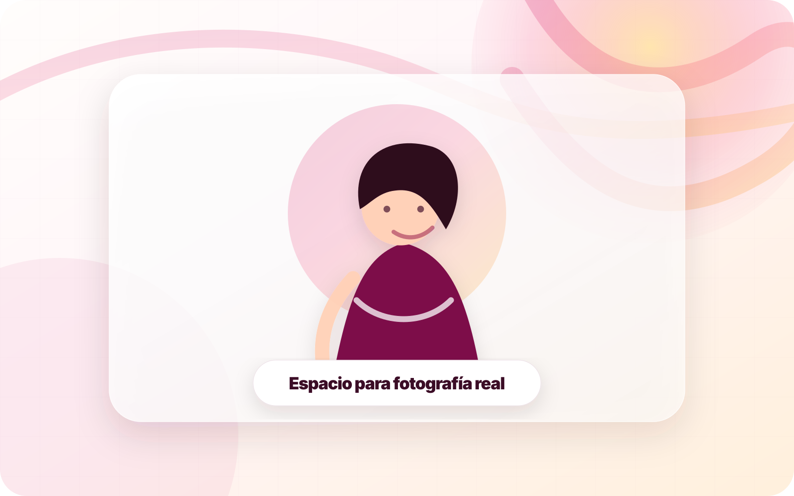

Networking con propósito
Conecta con empresarias, autónomas, directivas y profesionales de Ourense en un entorno cercano, útil y de confianza.
AME Ourense reúne a mujeres empresarias y profesionales para crear oportunidades, compartir conocimiento y dar visibilidad al liderazgo femenino de la provincia.
La web está construida alrededor de los tres beneficios que más importan a una empresaria: contactos útiles, conocimiento aplicable y reconocimiento profesional.
Conecta con empresarias, autónomas, directivas y profesionales de Ourense en un entorno cercano, útil y de confianza.
Jornadas, seminarios y recursos prácticos para gestionar, crecer y comunicar mejor tu proyecto.
Espacios para dar voz a las socias, compartir logros y reforzar el papel de la mujer en el tejido empresarial.

AME Ourense puede convertirse en el punto de encuentro digital donde una socia encuentre actividades, recursos, contactos, novedades y formas de participar sin perder tiempo.
Ejemplos editables para que la asociación pueda publicar jornadas, desayunos empresariales y talleres.

Encuentro informal para conectar proyectos, compartir retos y abrir nuevas colaboraciones.

Sesión práctica para mejorar presencia online, redes sociales y propuesta de valor.

Jornada con empresas, instituciones y profesionales para visibilizar referentes de Ourense.
Galería de ilustraciones originales incluidas en el paquete. Se pueden usar como cabeceras, publicaciones, banners o reemplazar por fotografías reales de AME cuando estén disponibles.



Una web elegante, móvil, rápida y lista para publicar contenido sin depender de redes sociales.